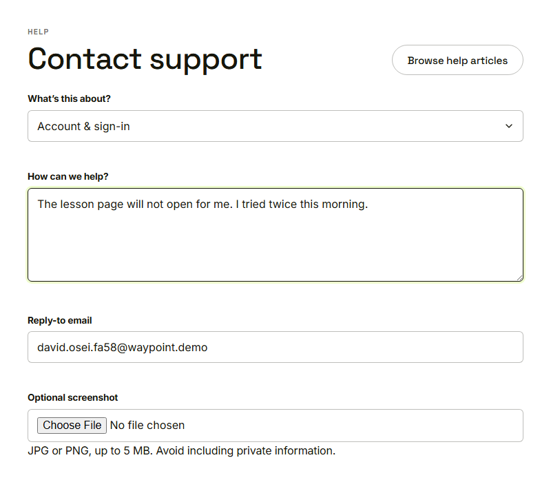
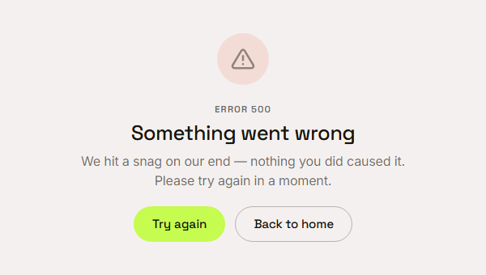
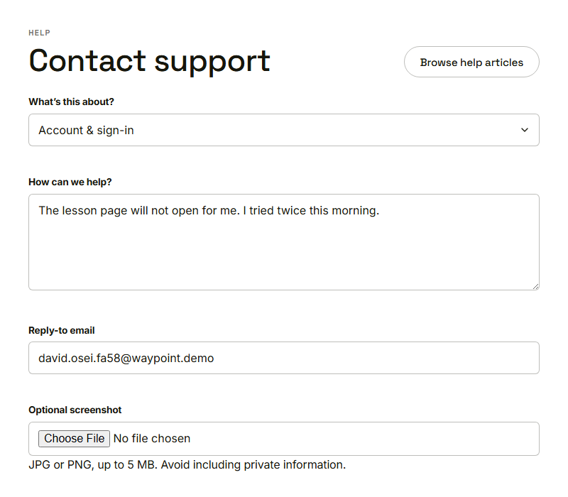

Waypoint · Video 093
When something goes wrong on our side
A friendly page, and nothing typed is lost
A message about to be sent

The message David typed
Something went wrong

Not their fault, and no technical detail
Try again

The message is exactly as typed
Things to remember
The page says the failure was not the person’s fault
No technical detail appears on screen
Try again returns to the page and restores the draft
Back to home is always offered